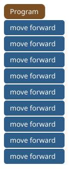
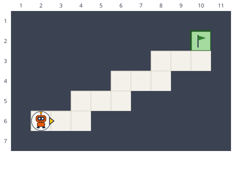

Count-controlled loop
Learn with an AI tutor
An AI tutor explains this page to you and helps you with the exercises. Choose your assistant:
Open with Claude Open with ChatGPT Open with Mistral Vibe
You use your own account with the provider. The assistant is not offered by lernapps.net: lernapps only provides the content and the exercises. The choice holds for all pages, on this device only.
The same block nine times
In class 7b's group chat:
Jona: I've started: “move forward” 9 times for my corridor 😩
Selin: Use “repeat … times”. Then one “move forward” is enough.
Jona: And how often does Kiko repeat?
Here you learn how Kiko carries out blocks several times with a count-controlled loop.
Exercise
Solution
Square A
That would be after three passes. But the loop only runs 2 times.
Square B
That is the end of the first pass. After it the loop runs a second time.
Square C right answer
Right: first pass 2 squares to the right, turn left. Second pass 2 squares up, turn left.
Square D
You overlooked the turns. After every pass Kiko turns left.
Kiko carries out everything inside the loop, then once more. After 2 passes it is in column 4, row 4.
Repeating a fixed number of times

© CC-BY-4.0Jona's program with 9 blocks
- loop
A loop carries out instructions several times. Repeating instructions is called iteration (repetition).
 © CC-BY-4.0
© CC-BY-4.0Selin's program with 2 blocks. Kiko goes just as far.
- count-controlled loop
A count-controlled loop runs its loop body as many times as the number says.
- loop body
The loop body is the blocks inside the loop. It is a sequence that is carried out several times.
Remember
“repeat … times” is an instruction itself, but not a simple command: it controls the instructions in its body. Count the squares Kiko has to move. Its own square doesn't count. In one pass Kiko carries out the whole body, from top to bottom; only then does the next pass begin.
Try it yourself
Without a computer: lay the “repeat ___ times” card with a number and cards inside it. Kiko says out loud which pass it is on each time.

With a computer, two challenges:
- 9 squares to the goal, with at most 3 blocks: open the challenge “The long corridor”
- A staircase with steps 2 squares wide: open the challenge “The wide staircase”

© CC-BY-4.0The staircase. Every step needs the same blocks.
Practice
Exercise
Three worked tasks, each with its solution:
Task no. 1
The loop body of “repeat 7 times” holds 2 commands. How many commands does Kiko carry out in total?
Hint
How many commands are there in one pass? And how many passes are there?
Solution
- One pass: 2 commands.
- 7 passes: 7 · 2 = 14 commands.
Right answer: 14
Task no. 2
The loop body of “repeat 6 times” holds 2 commands. How many commands does Kiko carry out in total?
Hint
How many commands are there in one pass? And how many passes are there?
Solution
- One pass: 2 commands.
- 6 passes: 6 · 2 = 12 commands.
Right answer: 12
Task no. 3
The loop body of “repeat 3 times” holds 2 commands. How many commands does Kiko carry out in total?
Hint
How many commands are there in one pass? And how many passes are there?
Solution
- One pass: 2 commands.
- 3 passes: 3 · 2 = 6 commands.
Right answer: 6
Exercise
Three worked tasks, each with its solution:
Task no. 1
Kiko stands at the start of a straight corridor, facing the goal. If you count the squares from Kiko to the goal, including the goal but not Kiko's square, there are 4. Which number goes into “repeat … times: move forward”?
Hint
Each “move forward” takes Kiko exactly one square further.
Solution
- Kiko has to move 4 squares, each with one “move forward”.
- So: repeat 4 times move forward.
Right answer: 4
Task no. 2
Kiko stands at the start of a straight corridor, facing the goal. If you count the squares from Kiko to the goal, including the goal but not Kiko's square, there are 11. Which number goes into “repeat … times: move forward”?
Hint
Each “move forward” takes Kiko exactly one square further.
Solution
- Kiko has to move 11 squares, each with one “move forward”.
- So: repeat 11 times move forward.
Right answer: 11
Task no. 3
Kiko stands at the start of a straight corridor, facing the goal. If you count the squares from Kiko to the goal, including the goal but not Kiko's square, there are 5. Which number goes into “repeat … times: move forward”?
Hint
Each “move forward” takes Kiko exactly one square further.
Solution
- Kiko has to move 5 squares, each with one “move forward”.
- So: repeat 5 times move forward.
Right answer: 5
Exercise
Solution
Right answer: forward, forward, forward – 3 times: forward; right, right – 2 times: right; forward, left, forward, left – 2 times: forward, left; forward, right, forward, right, forward, right – 3 times: forward, right
Look for the part that repeats. That becomes the loop body, and the number says how often it occurs.
Exercise
Solution
Right answer: The statement is false.
In every pass Kiko carries out the whole body: forward, left, forward, left, forward, left.
What comes next
You can now make blocks run several times with a count-controlled loop. Selin writes: “My maze has corridors that are a different length each time. Which number should I put in?” On the next page Kiko repeats without counting first.
Found a mistake or have an idea for this app?